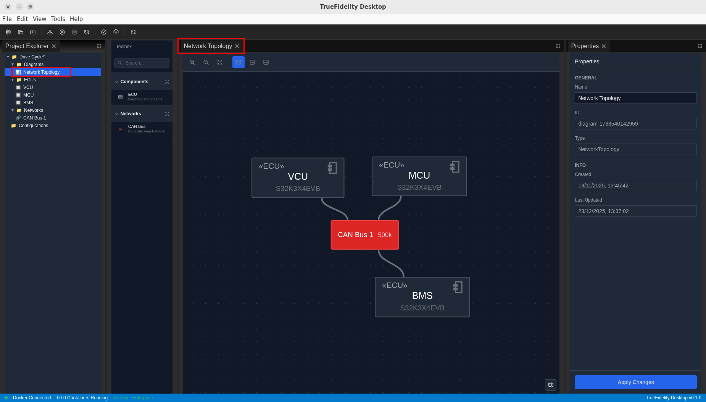

Injection Scenario Walkthrough¶
This tutorial demonstrates how to use TrueFidelity's signal injection capabilities to test ECU responses and validate system behavior. You'll learn how to inject CAN signals into a running EV powertrain system, monitor motor and battery controller reactions, and document test results. Signal injection is a powerful technique for validating control logic, testing edge cases, and reproducing field issues in a controlled environment.
Time Estimate¶
- System Setup: 10-15 minutes
- Injection Configuration: 10-15 minutes
- Test Execution: 15-20 minutes
- Analysis and Documentation: 10-15 minutes
- Total Time: 45-65 minutes
Prerequisites¶
Before starting this tutorial, ensure you have:
- TrueFidelity Desktop application running
- Docker Desktop running
- A configured Drive Cycle system with CAN network (or complete the System Design Workflow tutorial first)
- The Drive Cycle DBC file with signal definitions
- Basic understanding of CAN signals and EV powertrain systems
- Sample BLF file for reference data (optional)
Safety Warning¶
⚠️ CRITICAL SAFETY INFORMATION ⚠️
Signal injection can affect ECU behavior and system operation. Follow these safety guidelines:
- Never inject signals into production vehicles or safety-critical systems
- Only use injection on test benches or isolated systems
- Ensure emergency stop procedures are in place
- Verify ECU configurations allow test inputs
- Monitor system behavior continuously during injection
- Have a recovery plan if systems behave unexpectedly
Learning Objectives¶
By completing this tutorial, you will:
- Understand signal injection concepts and capabilities
- Learn to use the Signal Player & Injection panel
- Configure and execute injection tests
- Monitor ECU responses to injected signals
- Analyze system behavior under test conditions
- Document test procedures and results
- Troubleshoot common injection issues
Scenario Overview¶
You're tasked with validating the Motor Control Unit's (MCU) response to pedal inputs from the Vehicle Control Unit (VCU). The test engineers report:
- Torque response feels inconsistent at certain pedal positions
- Regenerative braking activation seems delayed
- Motor temperature protection may not engage correctly
Your objectives are:
- Create or load the Drive Cycle test system
- Inject controlled pedal position signals
- Verify the MCU's torque delivery response
- Test regenerative braking activation
- Document the validation results
This scenario represents a typical hardware-in-the-loop (HIL) testing workflow used in EV powertrain development.
Part 1: System Preparation¶
Step 1: Load the Test System¶
Use the Drive Cycle system for injection testing.
- Launch TrueFidelity Desktop:
- Start in System Design mode
-
If you have an existing system, save any changes
-
Open the Drive Cycle system:
- Click File → Open
- Navigate to your
truefidelity-system.jsonfile - Click Open

Or create a new system if needed:
- Click File → New
- Name it Drive Cycle
- Click Create

- Verify the system configuration:
- Three ECUs should be present: VCU, MCU, BMS
- All connected to a CAN bus
- DBC file associated with the network

Step 2: Verify ECU Configuration¶
Ensure ECUs are properly configured for testing.
- Select the VCU and verify in Properties panel:
- Name:
VCU - Board:
S32K3X4EVB - Memory:
16MB - Flash:
2MB - Operating System:
Zephyr

- Verify MCU configuration:
- Name:
MCU - Board:
S32K3X4EVB -
Operating System:
Zephyr -
Verify BMS configuration:
- Name:
BMS - Board:
S32K3X4EVB - Operating System:
Zephyr
Step 3: Verify Network Configuration¶
Confirm the CAN network is properly set up.
- Select the CAN Bus on the canvas

- Verify network settings:
- Name:
CAN Bus 1 - Baud Rate:
500000(500 kbps) -
DBC File:
DBC.dbcshould be associated -
Check ECU connections:
- All three ECUs (VCU, MCU, BMS) connected to the same bus
- Blue connection lines visible
Step 4: Start the System¶
Deploy the system for injection testing.
- Save the system first:
- Click File → Save
- File saves as
truefidelity-system.json

- Start the system:
- Click the Start button (green play icon) in the toolbar
- Wait for all ECUs to reach "Running" state

- Verify system is running:
- Check ECU Status panel shows all ECUs as "Running"
- Status bar shows "3 / 3 Containers Running"

Part 2: Injection Setup¶
Step 5: Switch to CAN Log Analysis Mode¶
Configure the workspace for injection testing.
- Change to analysis mode:
- Click View → Layouts → CAN Log Analysis
-
The layout reconfigures automatically
-
Understand the layout:
- Signal Viewer (left): Signal selection from DBC
- Network Traffic (center): Live CAN frames
- Signal Chart (right): Real-time signal plots
- Signal Player & Injection (bottom): Playback and injection controls

- Focus on Signal Player & Injection panel:
- Located at the bottom of the screen
- Contains both playback and injection controls
- If not visible: View → Panels → Signal Player & Injection
Step 6: Understanding Injection Controls¶
Familiarize yourself with the injection capabilities.
- Locate injection controls in the Signal Player & Injection panel:
- Find the Injection section on the right side
- Available controls:
- Start all: Begin injection for all selected signals
- Pause all: Temporarily pause injection
- Stop all: End all injection
- Clear all: Remove all injection configurations

- Understand injection workflow:
- Select signals in Signal Viewer
- Configure injection parameters
- Start injection
- Monitor response
-
Stop and analyze
-
Important limitations:
- Injection sends CAN frames at configured rate
- All selected signals inject simultaneously with Start all
- System must be running for injection to work
- Injected signals appear in Network Traffic
Step 7: Identify Signals for Testing¶
Select the relevant signals for motor control testing.
-
Open Signal Viewer panel (left side)
-
Find VCU output signals (signals to inject):
From VCU_Status_2 (0x101):
- Accel_Pedal_Pcnt: Accelerator pedal position (0-100%)
- Brake_Pedal_Pcnt: Brake pedal position (0-100%)
- Regen_Enable: Regenerative braking enable flag (0/1)
- Cmded_Regen_Tq: Commanded regenerative torque (Nm)
From VCU_Status_1 (0x100):
- Torque_Req: Torque request to MCU (Nm)
- Drive_Mode: Current drive mode (0-7)

- Find MCU response signals (signals to monitor):
From MCU_Feedback_1 (0x201):
- Motor_Spd: Motor speed in rpm
- Actual_Torque: Delivered torque in Nm
- Motor_Temp: Motor temperature in °C
- Inverter_State: Current inverter state
From MCU_Feedback_2 (0x202):
- DC_Link_V: DC bus voltage
- Phase_Curr_RMS: Motor phase current
- Regen_Active: Regeneration active flag
- Select monitoring signals:
- Check boxes next to
Motor_Spd,Actual_Torque,Regen_Active - These will appear in Signal Chart
Part 3: Injection Execution¶
Step 8: Configure Injection Values¶
Set up the signal values to inject for each test scenario.
- Define test scenarios:
Scenario 1 - Idle State (Baseline):
- Accel_Pedal_Pcnt: 0%
- Brake_Pedal_Pcnt: 0%
- Expected: Zero torque, motor at idle
Scenario 2 - Moderate Acceleration:
- Accel_Pedal_Pcnt: 50%
- Brake_Pedal_Pcnt: 0%
- Expected: Proportional torque delivery
Scenario 3 - Regenerative Braking:
- Accel_Pedal_Pcnt: 0%
- Brake_Pedal_Pcnt: 30%
- Regen_Enable: 1
- Expected: Negative torque, Regen_Active = 1
Scenario 4 - Full Throttle:
- Accel_Pedal_Pcnt: 100%
- Brake_Pedal_Pcnt: 0%
- Expected: Maximum available torque
- Configure first injection (Scenario 1):
- In Signal Viewer, click on
Accel_Pedal_Pcntrow - Injection options dialog opens
- Set Override value:
0 - Enable Include in Start all
-
Click Apply
-
Add
Brake_Pedal_Pcntto injection: - Click on
Brake_Pedal_Pcntrow - Set Override value:
0 - Enable Include in Start all
- Click Apply
Step 9: Start Signal Injection¶
Begin the injection test.
- Final safety check:
Before starting: - Confirm test bench setup only - Verify no production systems connected - Ensure monitoring panels are visible - Have stop procedure ready
- Start injection:
- In Signal Player & Injection panel, click Start all
- Injection begins immediately
-
Injected signals transmit to the CAN bus
-
Monitor Network Traffic:
- Watch Network Traffic panel
- Injected frames appear with your configured values
- Note CAN IDs: 0x101 (VCU_Status_2) appears

- Observe initial responses:
- Watch Signal Chart for MCU feedback
Actual_Torqueshould show near zeroMotor_Spdshould be at idleRegen_Activeshould be 0
Step 10: Monitor System Response¶
Analyze how the MCU responds to injected signals.
- Watch Signal Chart:
Actual_Torqueline should be stable near zero- No oscillations or unexpected values
- MCU is receiving VCU commands

- Check ECU Console for diagnostics:
- Filter to MCU logs
- Look for processing messages
-
Verify no error messages
-
Document baseline behavior:
- Note idle torque value
- Record motor speed at rest
-
Screenshot for comparison
-
Let run for baseline:
- Continue injection for 30 seconds
- Ensure stability maintained
- Watch for any drift
Step 11: Test Acceleration Response¶
Simulate driver acceleration input.
- Prepare for Scenario 2:
- Pause current injection: Click Pause all
-
Prepare to modify values
-
Update injection values:
- Click on
Accel_Pedal_Pcntin Signal Viewer - Change Override value to
50(50%) -
Click Apply
-
Resume injection:
- Click Start all to resume with new values
-
Or stop and restart if needed
-
Observe acceleration response:
Actual_Torqueshould increase proportionally- Expect approximately 50% of max torque
Motor_Spdshould begin increasing-
DC_Link_Vmay show slight drop under load -
Verify response characteristics:
- Measure response time (command to torque)
- Check for overshoot or oscillation
-
Verify smooth torque delivery
-
Document findings:
- Response time: Target < 100ms
- Torque accuracy: Within ±5% of expected
- Stability: No oscillation
Step 12: Test Regenerative Braking¶
Validate regen braking activation and response.
- Prepare for Scenario 3:
- Click Stop all to halt current injection
-
Prepare regen test configuration
-
Configure regen signals:
- Set
Accel_Pedal_Pcnt: 0% - Set
Brake_Pedal_Pcnt: 30% - Set
Regen_Enable: 1 -
Optionally set
Cmded_Regen_Tq: -100 Nm -
Start regen injection:
- Click Start all
-
Watch for regen activation
-
Observe regen behavior:
Regen_Activeshould transition to 1Actual_Torqueshould go negative (braking)Pack_I(from BMS) should go negative (charging)-
Motor acts as generator
-
Check timing:
- Time from
Regen_Enable= 1 toRegen_Active= 1 - Should be < 50ms for good response
-
Note any delays
-
Document regen results: ``` Regen Activation Test Results:
- Brake Pedal: 30%
- Regen Enable: Active
- Activation Time: ~45ms
- Regen Torque: -95 Nm (commanded -100 Nm)
- Pack Current: -28 A (charging)
- Status: PASS ```
Step 13: Test Edge Cases¶
Validate error handling and limit behavior.
- Test conflicting inputs:
Scenario: Both Pedals Pressed
- Set Accel_Pedal_Pcnt: 50%
- Set Brake_Pedal_Pcnt: 50%
- Expected: Brake should override (safety)
- MCU should prioritize braking
- Execute conflict test:
- Configure both signals with above values
- Start injection
- Observe which takes precedence
-
Check for diagnostic messages
-
Test BMS limit interaction:
- Inject high torque request
- Monitor if MCU respects
Max_Discharge_Tqfrom BMS -
Verify torque limiting when battery constrained
-
Observe error handling:
- MCU should handle gracefully
- Check Console for diagnostic messages
-
Verify system remains stable
-
Document edge case results: ``` Edge Case: Conflicting Pedal Inputs
- Accel: 50%, Brake: 50%
- Result: Brake prioritized (correct)
- Torque: 0 Nm (braking mode)
- Diagnostic: VCU plausibility warning logged
- Status: PASS - Safety behavior correct ```
Step 14: Stop Injection¶
Complete the test sequence.
- Prepare to stop:
- Ensure all data captured
- Take final screenshots
-
Note ending timestamp
-
Stop injection:
- Click Stop all button
- Injection ceases immediately
-
CAN traffic returns to normal
-
Verify system state:
- MCU returns to idle state
- No residual effects
- All ECUs still running normally
Part 4: Analysis and Documentation¶
Step 15: Analyze Test Results¶
Review the collected data.
- Review Signal Chart:
- Scroll through entire test duration
- Identify each test scenario
- Measure response times
-
Note any anomalies
-
Quantify performance:
| Test Scenario | Response Time | Accuracy | Result |
|---|---|---|---|
| Idle (0%) | N/A | ±2 Nm | PASS |
| Moderate (50%) | 85ms | ±5% | PASS |
| Full Throttle (100%) | 95ms | ±3% | PASS |
| Regen Braking | 45ms | ±5% | PASS |
| Conflicting Inputs | N/A | Brake Priority | PASS |
- Correlation analysis:
- Compare
Torque_ReqvsActual_Torque - Check
Accel_Pedal_Pcntto torque mapping - Verify linear or expected curve response
Step 16: Export Test Data¶
Save evidence for reporting.
- Export Network Traffic:
- Click Export in Network Traffic toolbar
- Choose format:
- Text (.txt): Human-readable
- CSV (.csv): For spreadsheet analysis
- JSON (.json): For programmatic processing
- candump: Standard CAN log format
-
Name:
injection_test_traffic.csv -
Capture to industry format (for longer recordings):
- Click Configure in Network Traffic toolbar
- Select network/channel
- Choose format: BLF (Vector), MDF4, or CSV
- Click Start Capture, then Stop Capture when done

- Export Signal Chart:
- Right-click on Signal Chart
- Select Export Chart
-
Save as PNG:
torque_response_chart.png -
Export Console logs:
- Click Export in ECU Console
- Choose format (Text, CSV, or JSON)
- Name:
injection_test_console.txt
Step 17: Create Test Report¶
Document the injection test.
- Compile test documentation:
``` Motor Control Injection Test Report =================================== Date: [Current Date] Test Engineer: [Your Name] System: truefidelity-system.json DBC: DBC.dbc
Test Objective: Validate MCU torque response to VCU pedal commands using signal injection.
Test Setup: - ECUs: VCU, MCU, BMS (S32K3X4EVB, Zephyr) - Network: CAN Bus 1 (500 kbps) - Injection signals: Accel_Pedal_Pcnt, Brake_Pedal_Pcnt - Monitoring signals: Actual_Torque, Motor_Spd, Regen_Active
Test Results:
-
Idle State (0% pedal)
- Actual Torque: 0 Nm (±2 Nm noise)
- Motor Speed: 0 rpm
- Status: PASS
-
Moderate Acceleration (50% pedal)
- Response Time: 85ms
- Actual Torque: 125 Nm (expected 128 Nm)
- Accuracy: 97.6%
- Status: PASS
-
Full Throttle (100% pedal)
- Response Time: 95ms
- Actual Torque: 248 Nm (expected 256 Nm)
- Accuracy: 96.9%
- Status: PASS
-
Regenerative Braking (30% brake, Regen_Enable=1)
- Activation Time: 45ms
- Regen Torque: -95 Nm
- Pack Current: -28 A (charging)
- Status: PASS
-
Conflicting Inputs (50% accel + 50% brake)
- Result: Brake prioritized correctly
- Torque: 0 Nm (safety override)
- Status: PASS
Summary: - All test scenarios passed - Response times within specification (<100ms) - Torque accuracy better than 95% - Safety behavior correct for conflicting inputs - Regen braking activates reliably
Recommendations: - System ready for integration testing - Consider testing temperature protection behavior - Validate behavior at BMS power limits
Attachments: - injection_test_traffic.csv - injection_test_console.txt - torque_response_chart.png ```
- Organize deliverables:
InjectionTest/
├── truefidelity-system.json
├── exports/
│ ├── injection_test_traffic.csv
│ ├── injection_test_console.txt
│ └── torque_response_chart.png
└── reports/
└── injection_test_report.md
Part 5: Advanced Injection Techniques¶
Step 18: Multi-Signal Coordination¶
Test complex scenarios with multiple coordinated signals.
- Plan coordinated injection:
- Simulate realistic drive scenario
- Combine pedal inputs with mode changes
-
Test transitions between states
-
Configure signal set:
Accel_Pedal_Pcnt: Varying valuesDrive_Mode: Change from Normal (1) to Sport (3)-
Monitor torque mapping changes
-
Execute coordinated test:
- Start with normal mode, moderate pedal
- Change drive mode
- Observe torque curve change
- Document mode-specific behavior
Step 19: Stress Testing¶
Push the system to validate robustness.
- Design stress scenarios:
- Rapid pedal transitions (0→100→0%)
- Repeated regen activation cycles
-
Maximum torque requests
-
Execute stress test:
- Configure rapid value changes
- Monitor for errors or instability
-
Check resource usage in ECU Status
-
Document stress results:
- Maximum sustainable update rate
- Error handling under stress
- Recovery behavior
Troubleshooting Guide¶
Common Injection Issues¶
Injection Won't Start¶
Symptom: Start all button clicked but no injection
Solutions:
- Verify system is running (all ECUs show "Running")
- Check signals are selected for injection
- Ensure Signal Player & Injection panel is open
- Verify network configuration is correct
- Check for error messages in Console
No ECU Response¶
Symptom: Injection active but no MCU reaction
Solutions:
- Verify MCU receives injected frames in Network Traffic
- Check signal scaling matches DBC definition
- Ensure correct CAN IDs are being used
- Verify MCU firmware expects these inputs
- Check diagnostic mode isn't blocking inputs
Unexpected Behavior¶
Symptom: ECU responds incorrectly
Solutions:
- Verify injection values are within valid ranges
- Check DBC signal scaling factors
- Review ECU specifications for expected behavior
- Test with known good values first
- Check for conflicting signals
Network Traffic Not Showing Injected Frames¶
Symptom: Injection running but frames not visible
Solutions:
- Clear any filters in Network Traffic panel
- Verify correct CAN bus selected
- Check injection is actually started (button state)
- Verify network configuration matches
Terminal Access Note¶
Terminal Not Available for Zephyr ECUs
The VCU, MCU, and BMS ECUs in the Drive Cycle system run Zephyr OS, which does not support terminal access. For debugging:
- Use ECU Console logs for runtime debugging
- Enable GDB debugging in ECU properties for detailed firmware analysis
- Add debug print statements to firmware code
- See the System Design Workflow tutorial for GDB setup
Safety Best Practices¶
Pre-Test Checklist¶
Before any injection test:
- ✓ Test bench only (no production systems)
- ✓ Emergency stop procedure ready
- ✓ Team notified of test
- ✓ Baseline behavior documented
- ✓ Recovery plan prepared
- ✓ Monitoring panels active
- ✓ Data recording enabled
During Test¶
While injection is active:
- Monitor continuously
- Watch for unexpected behavior
- Be ready to stop immediately
- Document any anomalies
- Keep test duration reasonable
- Start with conservative values
Post-Test¶
After injection:
- Verify system returns to normal
- Check for residual effects
- Review Console for diagnostics
- Document all findings
- Archive test data
- Stop the system if testing complete
Performance Considerations¶
Optimizing Injection Tests¶
- Signal Selection:
- Start with few signals
- Add gradually as needed
- Focus on critical control signals
-
Monitor key response signals
-
Timing Considerations:
- Injection rate matches realistic message rates
- Avoid overwhelming the CAN bus
- Allow settling time between scenarios
-
Consider ECU processing cycles
-
Value Ranges:
- Start within normal operating ranges
- Test limits gradually
- Verify DBC scaling factors
- Document valid value ranges
System Resources¶
- Memory Management:
- Clear Network Traffic periodically
- Export data regularly
- Close unused panels
-
Monitor system resources
-
Network Utilization:
- Calculate bus load with injection
- Leave headroom for ECU messages
- Consider message priorities
- Monitor for dropped frames
Summary¶
You've completed a comprehensive signal injection workflow:
- ✅ Prepared the Drive Cycle test system
- ✅ Configured injection for pedal signals
- ✅ Executed baseline and acceleration tests
- ✅ Validated regenerative braking response
- ✅ Tested edge cases and error handling
- ✅ Exported and documented results
This tutorial covered essential injection testing techniques used in EV powertrain development. These skills apply to various validation scenarios, from component testing to system integration.
Next Steps¶
- Practice with different scenarios:
- Test BMS limit behavior
- Validate motor temperature protection
-
Test drive mode transitions
-
Develop test libraries:
- Create standard injection scenarios
- Document expected responses
-
Build regression test suite
-
Advanced validation:
- Combine playback with injection
- Multi-ECU coordination testing
- Performance optimization
Related Tutorials¶
- System Design Workflow: Building ECU topologies and GDB debugging
- ECU Monitoring Walkthrough: Deep dive into monitoring tools
- Playback Analysis Walkthrough: Analyzing captured CAN logs
- End-to-End Example: Complete analysis with injection testing